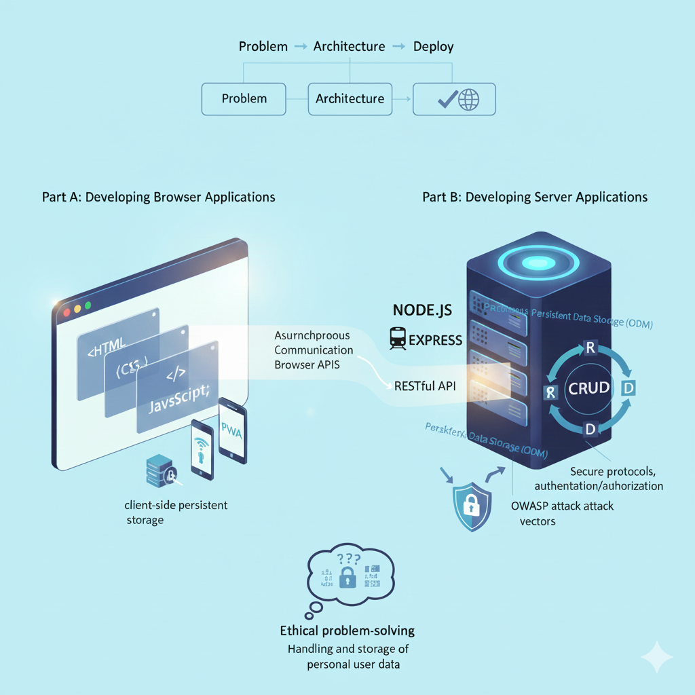

1DV528 Course Expectations & Learning Goals
My core expectation for the 1DV528 Web Programming course aligns directly with the goal of Developing Browser Applications. I aim to master the separation of concerns, ensuring HTML, CSS, and JavaScript are clearly distinct. Furthermore, I expect to understand the browser's architecture , learn how to store data persistently on the client, and utilize asynchronous communication and browser APIs to build optimized and accessible Progressive Web Applications (PWAs).
The transition to Developing Server Applications seems interesting to focus on. I anticipate gaining proficiency in Node.js and using the Express framework to manage routing and server-side data models. A key practical goal is to implement full CRUD (Create, Read, Update, Delete) functionality with persistent data storage using an ODM. Critically, I expect to master the creation of RESTful web services and the implementation of secure protocols, including authentication/authorization and safeguarding against common OWASP attack vectors, that are essential for modern web applications.
Ultimately, this course is about holistic web development. I hope to achieve the high-level goal of being able to solve complex problems, choose the right architecture and protocols, and successfully develop and deploy complete solutions. Finally, I look forward to engaging with the ethical problem-solving aspects regarding the handling and storage of personal user data on the web.